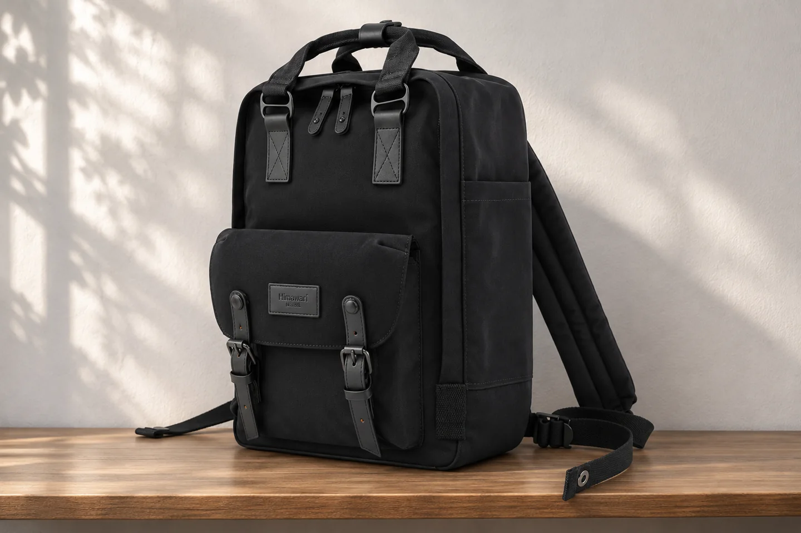
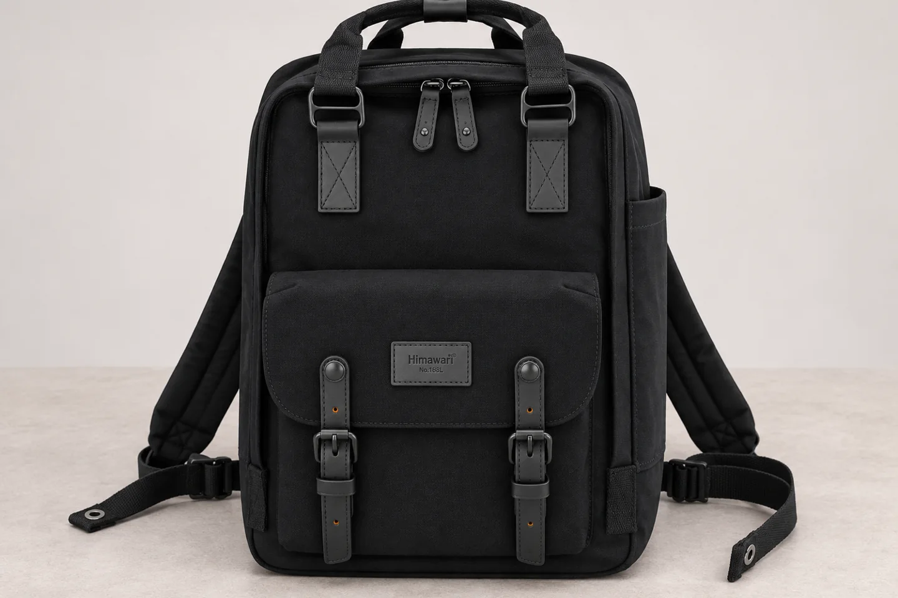
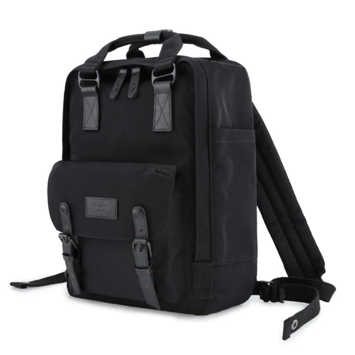

백팩 앞의 버클, 사진만 보고 여밈 방식을 알 수 있을까

검은 백팩의 앞포켓에 버클 두 개가 달려 있으면 매번 그 버클을 풀어야 포켓이 열릴까요. 정면 사진만으로는 답하기 어렵습니다. 끈이 버클을 통과하는 모습은 보여도 덮개 안쪽에 무엇이 있는지, 보이는 부품이 어떤 순서로 움직이는지는 가려져 있을 수 있습니다. 사진에서 확인한 것과 사용 전에 물어볼 것을 나누면 구매 후 예상이 달랐을 때의 불편을 줄일 수 있습니다.
No.188L 블랙의 제품 사진을 보면 앞포켓 덮개에 좁은 띠 두 줄과 버클 모양 부품이 보입니다. 위쪽에는 짧은 손잡이와 몸판에 연결된 탭이 있고, 앞포켓에는 작은 사각 라벨이 있습니다. 이 모습만으로 덮개 뒷면의 잠금 구조나 부품의 재질을 확정하지 않습니다. 제품에 따라 겉모양이 비슷해도 여는 방법과 관리 방법이 다를 수 있기 때문입니다.
사진 속에서 구분할 세 부분
먼저 덮개와 포켓 몸체를 나눠 봅니다. 덮개는 포켓 앞쪽을 덮는 면이고, 그 아래의 주머니는 물건이 놓이는 부분입니다. 사진에서 두 면이 만나는 선이 보여도 안쪽에 지퍼가 있는지, 덮개를 젖힌 뒤 어디까지 열리는지는 다른 사진이 필요합니다. 앞면의 띠와 장식이 보인다는 사실을 포켓 내부 구조의 증거로 쓰지 않는 것이 첫 단계입니다.
다음으로 덮개 위의 띠와 아래쪽 부품을 봅니다. 한 줄에서 둥근 점, 구멍처럼 보이는 자리, 고리 모양 부품이 이어져 있어도 사진에 보이는 점이 무엇을 고정하는지 단정하지 않습니다. 두 띠가 비슷해 보여도 각각 움직이는지, 어느 쪽부터 여는지는 제품 설명이나 실제 동작을 확인해야 합니다. 사진을 확대할 때는 선명도가 떨어진 부분을 억지로 해석하지 않습니다.
마지막으로 가방 위쪽의 손잡이와 주입구를 따로 봅니다. 앞포켓의 덮개와 위쪽 지퍼는 서로 다른 자리입니다. 앞포켓에 관심이 있어 이미지를 확대하다 보면 주입구의 여밈이나 손잡이가 사진 밖으로 잘릴 수 있습니다. 포켓을 열기 위한 동작과 가방 전체를 여는 동작을 한꺼번에 짐작하지 않는 편이 좋습니다.

정면 외에 어떤 사진이 필요한가
정면에서는 두 띠의 위치와 덮개 크기를 비교하기 쉽습니다. 하지만 덮개가 주머니에서 얼마나 떨어져 있는지, 끈 끝이 아래쪽에서 어떻게 이어지는지는 옆에서 찍은 사진이 더 도움이 될 수 있습니다. 버클이 어디에 연결되어 있는지 확인하려면 정면 전체와 부품을 가까이 찍은 사진을 함께 보는 것이 좋습니다. 한 장만 보고 다른 사진에 없는 부분을 만들어 생각하지 않습니다.
앞포켓을 연 사진이 있다면 덮개 안쪽과 입구를 살펴봅니다. 촬영을 위해 일부 부품을 풀어 둔 상태일 수 있으므로 사진 아래 설명도 함께 확인합니다. 안쪽 사진이 없다면 물건을 넣은 후 어떤 순서로 닫는지와 버클을 매번 조절해야 하는지 판매자에게 묻는 것이 정확합니다. 같은 사진을 여러 번 확대하는 것보다 짧고 구체적인 질문 하나가 답을 좁혀 줍니다.
사용할 장면을 질문으로 바꾸기
평소 이동 중 앞포켓을 자주 연다면 먼저 여는 데 필요한 손의 수와 동작을 확인합니다. 예를 들어 한 손에 다른 짐을 든 상황에서 포켓을 열고 싶다면, 덮개를 들 때 몸판을 받쳐야 하는지 실제 가방을 놓고 시험해 볼 수 있습니다. 정지된 상품 사진은 손의 움직임을 보여 주지 않으므로, 그 사진만으로 한 손 사용이 쉽다고 판단하지 않습니다.
반대로 목적지에서만 포켓을 열고 이동 중에는 닫아 둘 계획이라면 여는 속도보다 닫힌 상태에서 띠 끝이 어디에 놓이는지 살펴볼 수 있습니다. 의자나 선반에 둘 때는 앞포켓의 돌출된 부분과 부품이 주변 물체에 닿는지 살펴봅니다. 이 역시 실제 놓는 방향과 공간에 따라 달라집니다. 사진에 보이는 부품이 모든 표면을 보호하거나 손상을 막는다고 기대해서는 안 됩니다.
문의할 때 남기면 좋은 정보
판매자에게는 제품명과 색상을 함께 적고, 확인하려는 부분이 보이는 사진을 지정합니다. ‘앞포켓의 두 띠를 매번 버클에서 빼야 덮개가 열리나요’, ‘덮개를 젖힌 안쪽과 포켓 입구를 볼 수 있나요’처럼 동작을 묻는 편이 ‘버클이 편한가요’보다 구체적입니다. 편하다는 느낌은 손의 크기와 사용하는 상황에 따라 달라질 수 있기 때문입니다.
이미 사용하는 가방이라면 문제의 위치와 상태를 분리해 기록합니다. 어느 쪽 부품인지, 띠가 움직이지 않는지, 원단이 걸리는지, 열고 닫을 때 달라진 점이 있는지를 적습니다. 부품을 세게 잡아당기거나 확인되지 않은 방법으로 분리하기 전에 제품의 관리 안내와 판매처의 답을 확인합니다. 사진은 전체 위치가 보이는 것과 부품이 보이는 것을 각각 남기면 설명하기 쉽습니다.
구매 전이라면 사진의 버클 부분뿐 아니라 반대편의 연결 사진도 요청할 수 있습니다. 덮개를 연 상태에서 보이는 부품과 닫은 상태에서 보이는 부품이 어느 위치에서 만나는지 알면 질문의 뜻을 서로 다르게 이해할 가능성이 줄어듭니다. 답을 받더라도 다른 색상이나 다른 크기 옵션에 그대로 적용되는지는 따로 확인합니다.
가방을 손으로 살펴볼 때는 먼저 빈 상태에서 각 부분의 움직임을 관찰하고, 평소의 소지품을 담은 뒤에도 같은 순서로 확인해 봅니다. 물건이 덮개 안쪽을 밀면 포켓의 모양이 달라질 수 있지만, 사진만으로 특정한 고장이나 구조를 추정하지 않습니다. 포켓을 채우는 양과 여밈의 상태를 각각 기록해야 다음에 비교하기 쉽습니다.

버클의 인상은 디자인을 고르는 데 도움이 되지만, 실제 여밈을 설명하는 답까지 대신하지는 못합니다. 앞포켓과 주입구를 나누고, 정면과 안쪽을 확인한 뒤, 자신의 사용 장면에 필요한 동작을 묻습니다. 이렇게 확인하면 사진이 보여 주는 범위 안에서 가방을 고르고, 아직 보지 못한 부분은 확인할 질문으로 남길 수 있습니다.